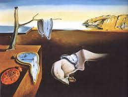
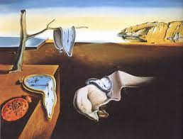

What's The Scoop!
This site was upgraded to Angular v15 running on heroku/Salesforce
Cloud Eco.
Current projects.
Converting Colts By Numbers Python to FastAPI & Microservices.
Upgrading Colts By Numbers web UI to Angular 15.
What's Here?
1. Colts By Numbers a fan website I do during football season.
2. My work as an Application Developer that includes skills
and projects.

Film Noir & Musicals, Music of the 1920s, 30s, 40s, Existentialists, Technology, Sports and Social Media
 

All rights reserved Brian Quinn